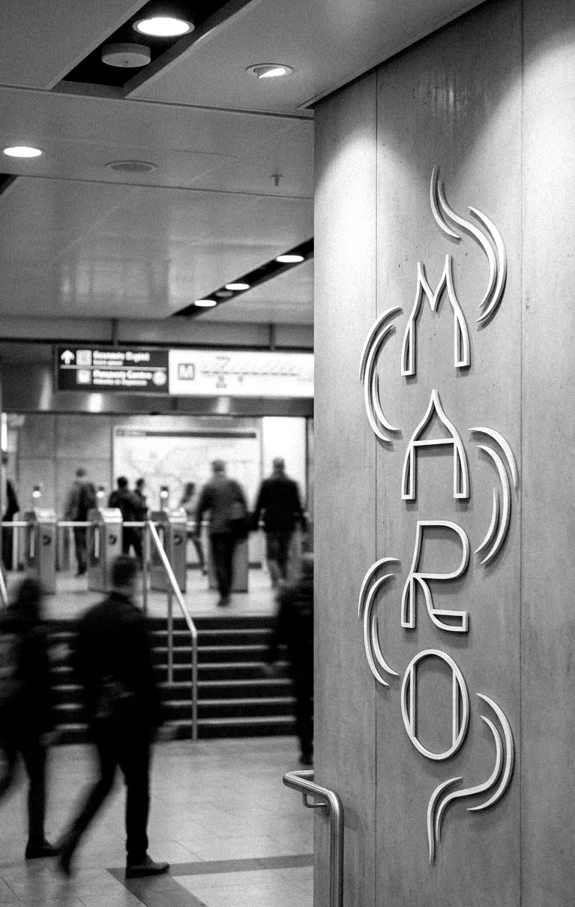
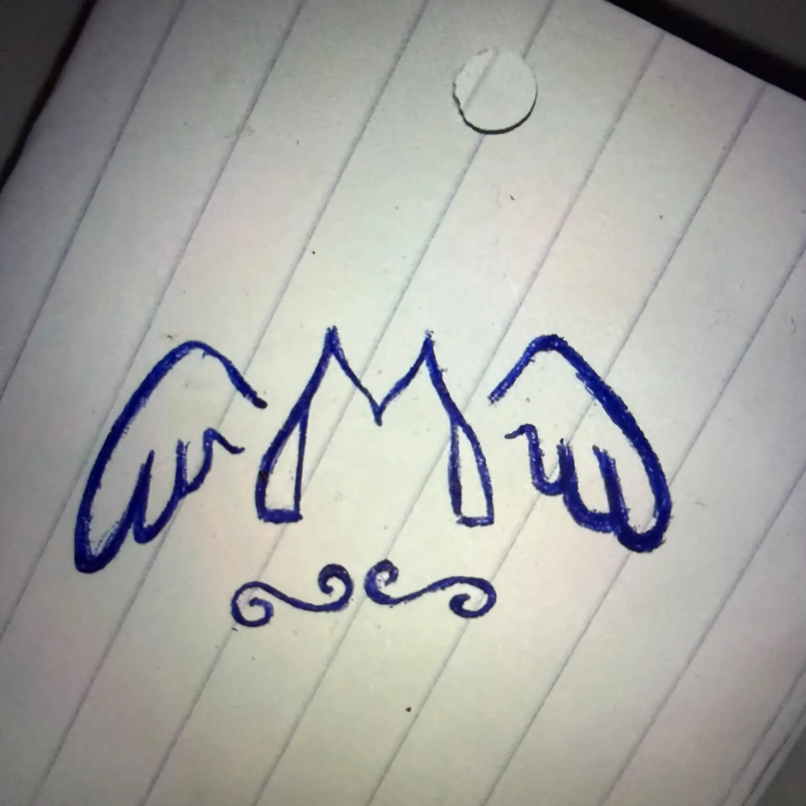

MARO nasce a Milano, tra una fermata della metro e un foglio di carta. È un marchio di abbigliamento, ma prima ancora è un’idea: i piedi restano per strada, la testa può andare dove vuole.

01
Tutto parte da un foglio
Il primo disegno di MARO è uno schizzo a penna su un foglio a righe: una M con due ali e un ricciolo sotto. Niente computer, niente agenzia.
Da quel foglio è nato il simbolo che oggi è ricamato sul petto delle polo: le stesse ali, ridisegnate per essere riconoscibili anche a tre centimetri.

Lo schizzoIl simbolo di oggi
02
Le ali non sono un ornamento.
Sono il motivo per cui MARO esiste. Ricordano a chi lo indossa che la testa è libera anche quando la giornata non lo è: il treno delle otto, il lavoro, la città che corre. Si può volare lo stesso.
03
La stretta di mano
Il secondo disegno è una stretta di mano dentro una nuvola: due mani che si tengono, due mondi che si incontrano.
È il segno più personale del marchio. Viene da chi è cresciuto tra culture diverse e ha imparato che si va più lontano tenendosi. Oggi è stampato sulla schiena della felpa grigia.